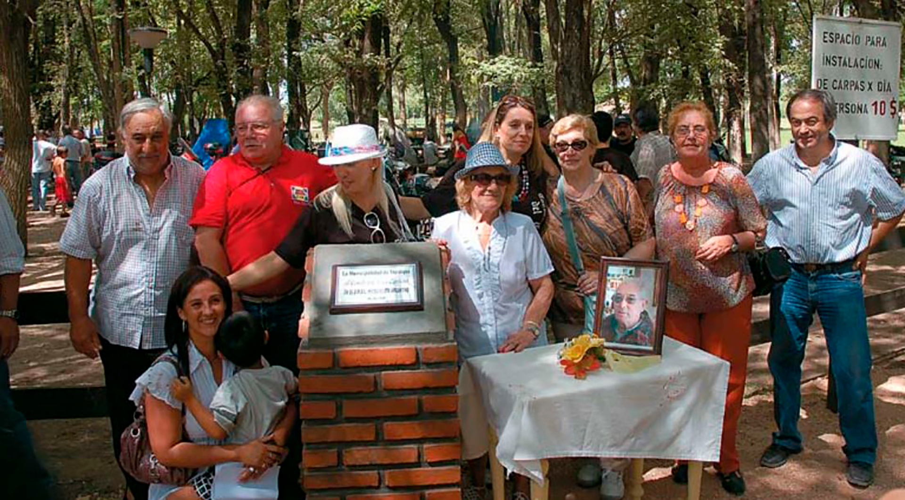

| Inicio |
| “Nacimiento de un motero de ley” | Familia |
|---|---|
|
Nacimiento “Nací en la Ciudad de Buenos Aires, el 5 de marzo de 1928, en el Hospital Rivadavia, en aquel entonces solía llamárselo así. Imagino la alegría de mis padres; dicen que fue inmensa”, contó José Luis Carlessi Manzanares |
 |
“Un motero de ley”: la historia del “Conde Javornovich”, el hombre que inspiró a los motociclistas.
José Luis Carlessi Manzanares nació el 5 de marzo 1928 y fue un reconocido viajante de comercio que recorrió todo el país. Llevaba piezas de recambio para usinas térmicas y su pasión por las motos hasta los lugares más recónditos. En su honor, desde 2008, se celebra el Día Nacional del Motociclista el día de su nacimiento.
“Era todo un personaje, amiguero. Siempre estaba para los amigos y buscaba la manera de hacernos reír y lo lograba. ¿Viste esa gente que te da palmadas en la espalda con sinceridad? Así era él, un motero de ley que también disfrutaba de tomarse de visitar el Café Tortoni o La Biela”. El que lo recuerda en diálogo con Infobae es Jorge Monasterio, creador de la primera revista impresa sobre motos en Argentina y quien conoció a José Luis Carlessi Manzanares cuando tenía 12 años y que, al igual que todos los que lo obtuvieron su amistad, no tardó en quererlo y sentirse hipnotizado por sus anécdotas y la especial manera de contarlas.
Es que el hombre, nacido en el otoño de 1928 en el Hospital Rivadavia y que vivió en el barrio de Villa Crespo, simplemente amaba las motos. Eran su mundo, su pasión y su felicidad hallada pronto: apenas era un niño cuando una foto de un tío montado en una Harley Davidson lo impactó. Su fascinación se completó con las carreras de motos y con el ruido de los motores trabajando en un taller. Ese coctel, con los años, le hizo saber que allí estaba lo que quería y decidió que su vida sería arriba de dos ruedas.
Y así lo hizo hasta los 79 años, pocos meses antes de que un cáncer lo venciera y lo hiciera dar su último suspiro el 5 de agosto de 2007. Dejó amigos en cada rincón de Argentina que confirman lo que siempre aseguraba: “Si tendré amigos en...” y se podía referir a cualquier lugar. “Si ibas con él, a donde fuera, siempre alguien lo saludaba”, recuerda Monasterio, director de Infomotor, la revista mediante la cual propuso que desde 2008, el año siguiente a su deceso, cada 5 de marzo se celebre el Día Nacional del Motociclista para rendirle homenaje al natalicio de aquel hombre querible, solitario y que lo único que le anhelaba era volver a viajar en moto.